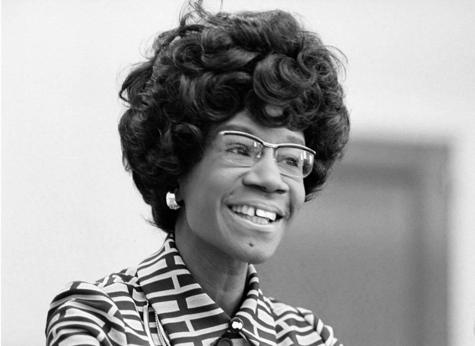

Paths to Power


Image Source: Prints and Photographs Division, Library of Congress


Get in touch with the organization that contributed stories and archival information to this page! This organization can be reached at email@gmail.com.

Shirley Chisholm made history on January 25, 1972, when she announced her candidacy for President of the United States from the historic Concord Baptist Church in Bedford-Stuyvesant, Brooklyn. As the first Black woman to seek the nomination of a major political party, her campaign challenged societal norms and political barriers, the choice of Concord Baptist Church as the announcement venue was significant, as it was not only a cornerstone of Brooklyn’s Black community but also a hub for civil rights activism and grassroots organizing. This marked a pivotal moment in both her career and the broader fight for representation and equity in American politics.

Alice W. Wiley Seay,
1958-1937